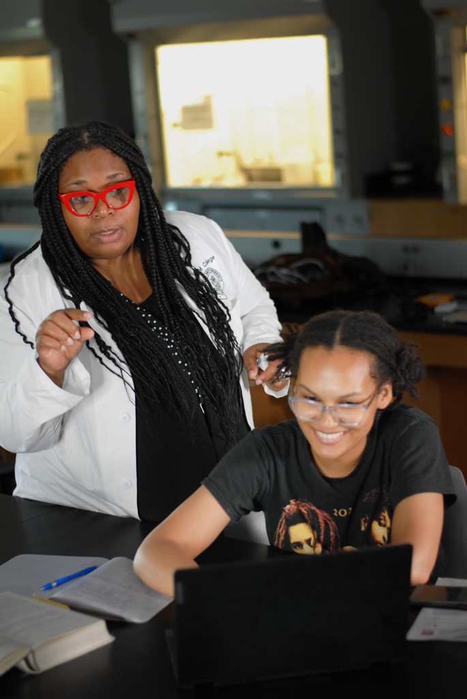

Faculty and Staff
Dr. Tracy Brown-Fox leads the M-PURE program. This program was created to help prepare underrepresented groups including African Americans, people of color (POC), females, and other minority groups for STEM careers. Students with diverse knowledge of instrumentation through their course studies and research projects are marketable to graduate programs and future employers. Students who graduate with STEM degrees equipped with research skills will have better job placement or increased opportunities in graduate school upon graduation. Both private and public companies have expressed that there must be an increase in the number of domestically prepared skilled workers in STEM areas of the discipline. Additionally, research opportunities have been shown to decrease STEM attrition for STEM disciplines while equipping students with the necessary tools (e.g. problem-solving and critical thinking, research experiences with "hands-on" training) to be successful beyond college.